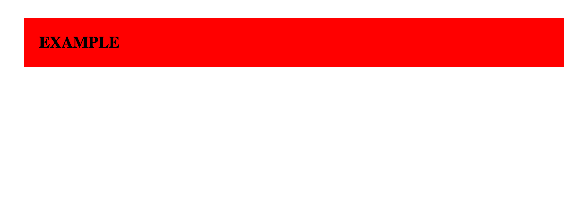
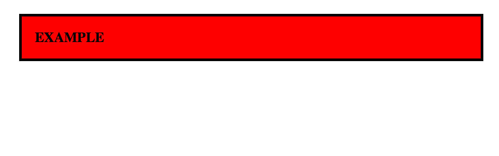

Padding Borders Margins
After a nice long, frustrating day of coding, I think its time that I dive into a few concepts that I've become familiar with over the past two weeks at DBC. If you are just beginning web design, mastering borders, margins, and padding will be essential to properly format content on your web page and achieve your optimal end result. However, it is often confusing to discern which concept to use and when. Thus, I've dedicated this post help with that decision.
The following model offers a great visualization of where each property is located around the content. Remember, content can be any element such as text (see model), images, lists, etc. that is in our html document. The content's padding is located immediately around it; the border is located outside of the padding, and the margin is located outside of the border:

Once you get familiar with this model (memorize it), you can start to figure out how to use each property. You can consider padding as almost a part of the content. For example, if you increase the padding the edges of the content will be pushed out. Below you can see some of this in action. I gave the image a red background color so you can see the changes. See what happens to that red background when I increased the padding around “example” by 30px:
The red just expanded! Essentially the space between the border(edge of the content) and the content itself expanded. Since the background is red, the red part ended up expanding. Now, if we play with the margins a little bit, something different happens. See what happens now when I increase the margin by 40px:
Now the space between the edges of the content and the web-page itself has increased. Now lets just add a thick, black border just so you can see where it will be:
Overall, if you want to increase the space that is within the content, you should change the padding property. However, you want to distance the content from other elements in the page including the edges of the page itself, you should change the margins. If you simply want to add a defining border, then border is pretty self explanatory. But note that changing the padding will seem to cause a change in the size of the content while changing the margins will seem to cause a change in the space around the content. I hope you all found this little tutorial helpful and not confusing.
Jensen Bouzi, August 17, 2014